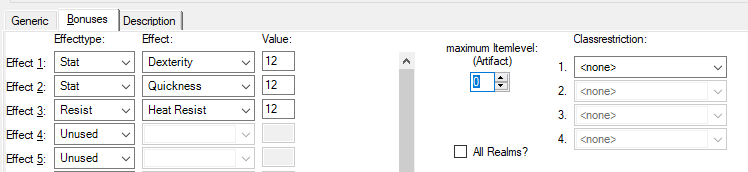

Item - Bonus (for Dropitems)

Here the bonuses of dropped and unique items are displayed and set.
Effect type:
The spell effects are divided into different groups, which can be set
here.
Effect:
The spell effect is set here.
Value:
The value of the ban spell effect is set here.
Activation level:
Here, artifacts are set from which stage the respective effect works.
Maximum Item Level:
In the case of an artifact, the maximum to reach item level is set here.
For normal objects it says 0. In practice it only says 0 or 10.
current item level:
Here you can set artifacts of the currently reached item level. This field
is only displayed if the maximum item level is greater than 0.
All realms?
It is checked here whether the item is valid for all or only for the set
realm.
Class restriction:
If the item is restricted to certain classes, it will be set here.